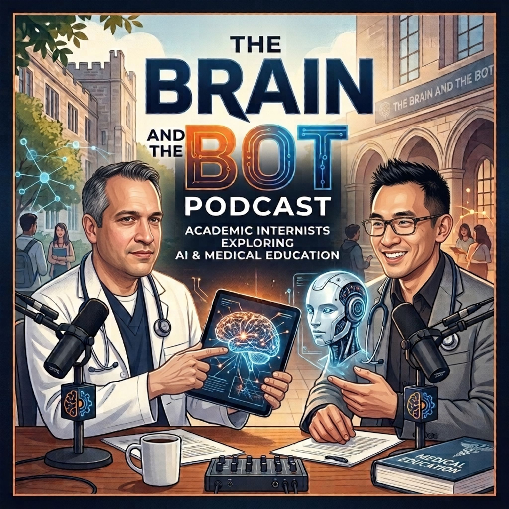

Episodes
Hosts
Daniel Brandt Vegas, MD, MHPE
Steven Wong, MD, MHI
Get in touch
Questions, episode ideas, or corrections: hello@brainandthebot.ai.

Two clinician educators learning and discussing Artificial Intelligence related topics from a Medical Education perspective.
Daniel Brandt Vegas, MD, MHPE
Steven Wong, MD, MHI
Questions, episode ideas, or corrections: hello@brainandthebot.ai.